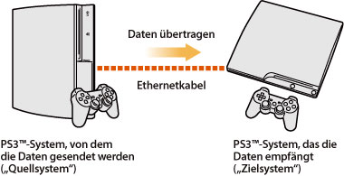
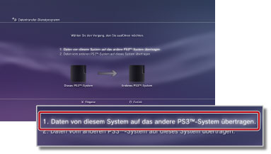
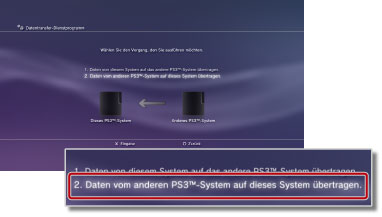

Einstellungen > System-Einstellungen > Datentransfer-Dienstprogramm
Datentransfer-Dienstprogramm
Sie können jetzt Daten, die auf der Festplatte eines PS3™-Systems gespeichert sind, über ein Ethernetkabel auf die Festplatte eines anderen PS3™-Systems übertragen (kopieren oder verschieben).

Hinweise
- Wenn Sie diese Funktion ausführen, werden alle Daten auf dem PS3™-System, das die Daten empfängt (das „Zielsystem“), gelöscht.
- Gelöschte Daten lassen sich nicht mehr wiederherstellen. Achten Sie also darauf, nicht versehentlich wichtige Daten zu löschen. Beschädigte oder verloren gegangene Daten liegen in der Verantwortung des Benutzers.
- Bestimmte Datentypen lassen sich möglicherweise nicht übertragen. Hier finden Sie Näheres dazu.
Vorbereiten der Systeme auf die Datenübertragung
Bevor Sie mit der Datenübertragung beginnen können, müssen Sie die folgenden Schritte ausführen.
1. |
Aktualisieren Sie die Systemsoftware beider PS3™-Systeme anhand der neuesten Version. |
|---|---|
2. |
Bereiten Sie das PS3™-System vor, von dem die Daten gesendet werden sollen (das „Quellsystem“). |
- Erstellen Sie ein PlayStation®Network-Konto, wenn ein Benutzer noch nicht über ein solches Konto verfügt.
- - Wählen Sie
 (PlayStation®Network) >
(PlayStation®Network) >  (Für das PlayStation®Network einschreiben) und gehen Sie zum Erstellen eines Kontos nach den Anweisungen auf dem Bildschirm vor.
(Für das PlayStation®Network einschreiben) und gehen Sie zum Erstellen eines Kontos nach den Anweisungen auf dem Bildschirm vor. - Deaktivieren Sie das PS3™-System, wenn die zu übertragenden Daten Inhalte umfassen, die im PlayStation®Store gekauft wurden.
- - Wählen Sie (PlayStation®Network) >
 (Konto-Verwaltung) >
(Konto-Verwaltung) >  (Systemaktivierung).
(Systemaktivierung). - „Synchronisieren“ Sie die Trophäeninformationen auf dem PS3™-System mit dem PlayStation®Network-Server oder sichern Sie sie, wenn Sie Trophäeninformationen übertragen möchten.
- - Melden Sie sich am PlayStation®Network an und wählen Sie
 (Spiel) >
(Spiel) >  (Trophäen-Sammlung).
(Trophäen-Sammlung). - Melden Sie sich vor dem Übertragen von Daten bei
 (PlayStation®Home) an, wenn Sie Bonusgegenstände für die Verwendung in (PlayStation®Home) auf dem Quellsystem besitzen.
(PlayStation®Home) an, wenn Sie Bonusgegenstände für die Verwendung in (PlayStation®Home) auf dem Quellsystem besitzen. - Sichern Sie Ihre Profilinformationen und die in LittleBigPlanet™ erstellten Level im gespeicherten Spiel. Die gesicherten Daten können Sie dann in LittleBigPlanet™ auf dem als Ziel verwendeten PS3™-System weiterhin verwenden.
Hinweis
Wenn Sie die Datenübertragung ausführen, ohne zuvor ein PlayStation®Network-Konto zu erstellen, gelten die folgenden Einschränkungen:
- Gespeicherte Daten können auf dem als Ziel verwendeten PS3™-System möglicherweise nicht verwendet werden.
- Gespeicherte Daten, die Sie übertragen haben, können möglicherweise nicht mehr zum Gewinnen von Trophäen verwendet werden.
- Trophäeninformationen werden nicht übertragen.
Übertragen von Daten
Schalten Sie beide PS3™-Systeme aus und führen Sie die folgenden Schritte aus. Wenn es sich bei den übertragenen Daten um gespeicherte Spieldaten handelt, die mit einem Kopierschutz versehen sind, oder um Daten mit Urheberrechtsschutzcodierung, werden die Daten auf das als Ziel verwendete PS3™-System verschoben und vom dem als Quelle verwendeten PS3™-System gelöscht.
1. |
Stellen Sie mit einem Ethernetkabel eine direkte Verbindung zwischen den beiden PS3™-Systemen her. |
|---|---|
2. |
Schließen Sie die PS3™-Systeme an verschiedene Videoeingänge am Fernsehgerät an. |
3. |
Schalten Sie das Fernsehgerät und dann die PS3™-Systeme ein. |
4. |
Wählen Sie an dem als Quelle verwendeten PS3™-System |
5. |
Wählen Sie [1. Daten von diesem System auf das andere PS3™-System übertragen.].  Wenn Sie die oben beschriebenen Schritte zur Vorbereitung noch nicht ausgeführt haben, führen Sie diese Schritte jetzt anhand der Anweisungen auf dem Bildschirm aus. |
6. |
Wenn sich das PS3™-System im Bereitschaftsmodus für die Datenübertragung befindet, wechseln Sie mit der Fernbedienung des Fernsehgeräts zu dem Videoeingang, bei dem der Bildschirm des als Ziel verwendeten PS3™-Systems zu sehen ist. |
7. |
Wählen Sie an dem als Ziel verwendeten PS3™-System |
8. |
Wählen Sie [2. Daten vom anderen PS3™-System auf dieses System übertragen.]  Gehen Sie zum Abschließen des Vorgangs nach den Anweisungen auf dem Bildschirm vor. |
 (Einstellungen) >
(Einstellungen) >  (System-Einstellungen) > [Datentransfer-Dienstprogramm].
(System-Einstellungen) > [Datentransfer-Dienstprogramm].Anmerkungen
- Nach Abschluss der Datenübertragung können Sie das als Quelle verwendete PS3™-System ausschalten. Stellen Sie das Fernsehgerät so ein, dass der Bildschirm des als Quelle verwendeten PS3™-Systems zu sehen ist, und wählen Sie
 (Benutzer) >
(Benutzer) >  (System ausschalten).
(System ausschalten). - Wenn Sie vom PlayStation®Store heruntergeladene Inhalte übertragen haben, müssen Sie das als Ziel verwendete PS3™-System aktivieren, bevor Sie die Daten verwenden können. Melden Sie sich am PS3™-System als der Benutzer an, dem die Inhalte gehören, und wählen Sie (PlayStation®Network) > (Konto-Verwaltung) > (Systemaktivierung), um das System zu aktivieren.
Einschränkungen des Datentransfer-Dienstprogramms
Bestimmte Datentypen können mit dem Datentransfer-Dienstprogramm nicht übertragen werden und bestimmte Datentypen können zwar übertragen, aber auf dem als Ziel verwendeten PS3™-System nicht wiedergegeben werden.
Die neuesten Informationen dazu finden Sie auf der SCE-Website für Ihre Region. Die folgenden Datentypen können nicht übertragen werden:
- Als geliehen vom PlayStation®Store heruntergeladene Videoinhalte (Dateityp: MNV)
- Auf der Festplatte des PS3™-Systems gespeicherte Titel (einschließlich „SongPacks“) für die SingStar™-Software
- Videodateien mit Urheberrechtsschutzcodierung (Dateitypen: MGV und ETS)
- Mit dem DivX® VOD-Dienst (Video On Demand) kompatible Videodateien
Bei den folgenden Datentypen müssen Sie nach dem Abschluss der Datenübertragung einige zusätzliche Schritte ausführen, bevor Sie die Daten verwenden können:
- Anwendungsdaten für Life with PlayStation®
- - Laden Sie die Life with PlayStation®-Anwendung auf das als Ziel verwendete PS3™-System herunter und installieren Sie sie dort. So können Sie weiterhin Punkte für das PlayStation®Network-Bewertungssystem des Folding@home™-Kanals sammeln.
- GripShift™
- - Wenn Sie das Spiel nach der Datenübertragung zum ersten Mal starten, wird eine Fehlermeldung angezeigt und Sie können das Spiel nicht verwenden. Zum Spielen müssen Sie das Spiel erneut herunterladen und installieren.
- Gespeicherte Daten für Ghostbusters™ und Ghostbusters™: The Video Game
- - Der gespeicherte Spielstand wird nicht erkannt, wenn Sie das Spiel nach der Datenübertragung zum ersten Mal starten. Beenden Sie das Spiel und starten Sie es neu, wenn Sie die gespeicherten Daten verwenden möchten.
Anmerkung
Einige Softwaretitel sind in manchen Regionen möglicherweise nicht erhältlich.